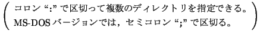

<!DOCTYPE HTML PUBLIC "-//W3C//DTD HTML 3.2 Final//EN">
<!-- Converted with jLaTeX2HTML 98.1p1 release (March 2nd, 1998) + JP patch 2.0 (March 16th, 1998)
patched by Kenshi Muto (mutou@three-a.co.jp), Three-A Systems,Co.,Ltd.
LaTeX2HTML 98.1p1 release (March 2nd, 1998)
originally by Nikos Drakos (nikos@cbl.leeds.ac.uk), CBLU, University of Leeds
* revised and updated by:  Marcus Hennecke, Ross Moore, Herb Swan
* with significant contributions from:
  Jens Lippmann, Marek Rouchal, Martin Wilck and others  -->
<HTML>
<HEAD>
<TITLE>mm$B%U%!%$%k(J $B$NFI$_9~$_(J(matx$B$N$_(J)</TITLE>
<META NAME="description" CONTENT="mm$B%U%!%$%k(J $B$NFI$_9~$_(J(matx$B$N$_(J)">
<META NAME="keywords" CONTENT="MaTX">
<META NAME="resource-type" CONTENT="document">
<META NAME="distribution" CONTENT="global">
<META HTTP-EQUIV="Content-Type" CONTENT="text/html; charset=iso-2022-jp">
<LINK REL="STYLESHEET" HREF="MaTX.css">
<LINK REL="next" HREF="node53.htm">
<LINK REL="previous" HREF="node51.htm">
<LINK REL="up" HREF="node51.htm">
<LINK REL="next" HREF="node53.htm">
</HEAD>
<BODY BGCOLOR=NavajoWhite>
<!-- Navigation Panel -->
<A NAME="tex2html1226"
 HREF="node53.htm">
</A> 
<A NAME="tex2html1222"
 HREF="node51.htm">
</A> 
<A NAME="tex2html1216"
 HREF="node51.htm">
</A> 
<A NAME="tex2html1224"
 HREF="node1.htm">
</A> 
<A NAME="tex2html1225"
 HREF="node247.htm">
</A> 
<BR>
<STRONG> Next:</STRONG> <A NAME="tex2html1227"
 HREF="node53.htm">$B%G!<%?$N%U%!%$%kF~=PNO(J</A>
<STRONG> Up:</STRONG> <A NAME="tex2html1223"
 HREF="node51.htm">$B%U%!%$%k(J</A>
<STRONG> Previous:</STRONG> <A NAME="tex2html1217"
 HREF="node51.htm">$B%U%!%$%k(J</A>
<BR>
<BR>
<!-- End of Navigation Panel -->

<H1><A NAME="SECTION00710000000000000000">
mm$B%U%!%$%k(J $B$NFI$_9~$_(J(<I>matx</I>$B$N$_(J)</A>
</H1><FONT SIZE="-1">
<A NAME="2962">&#160;</A>
<A NAME="2709">&#160;</A>
<A NAME="2710">&#160;</A>
<A NAME="2963">&#160;</A>
<A NAME="2712">&#160;</A>
<TT>load</TT>$B%3%^%s%I$N0z?t$K(Jmm$B%U%!%$%k$NL>A0$rJ8;zNs$H$7$F;XDj$9$k$3$H$K$h$C$F(J
mm$B%U%!%$%k$rFI$_9~$`$3$H$,$G$-$k!#(J
$B3HD%;R$r>JN,$9$k$H!$3HD%;R$O(J<TT>mm</TT>$B$H$J$k!#(J
$B%3%s%^$G6h@Z$k$3$H$K$h$j!$J#?t$N(Jmm$B%U%!%$%k$rF1;~$K;XDj$G$-$k!#(J
mm$B%U%!%$%k$O!$(J
</FONT><DL COMPACT>
<DT>1.
<DD>$B%+%l%s%H%G%#%l%/%H%j(J
<DT>2.
<DD>$B4D6-JQ?t(J<TT>MATXINPUTS</TT>$B$GDj5A$5$l$F$$$k%G%#%l%/%H%j0J2<$NA4$F$N(J
$B%G%#%l%/%H%j(J
<BR>

<!-- MATH: $\displaystyle
\left(\begin{array}{l}
\mbox{\rm $B%3%m%s(J``\mbox{\tt :}''$B$G6h@Z$C$FJ#?t$N%G%#%l%/%H%j$r;XDj$G$-$k!#(J}\\
\mbox{\rm MS-DOS$B%P!]%8%g%s$G$O!$%;%_%3%m%s(J``\mbox{\tt ;}''$B$G6h@Z$k!#(J}
\index{MS-DOS}
\end{array}\right)$ -->
<DT>3.
<DD><B>$B%G%U%)%k%H(Jmm$B%U%!%$%k%G%#%l%/%H%j(J</B>$B0J2<$NA4$F$N%G%#%l%/%H%j(J
($B%3%s%Q%$%k;~$K7hDj$5$l$k(J)
<A NAME="2724">&#160;</A>
</DL><FONT SIZE="-1">$B$N=gHV$GC5:w$5$l$k!#(J
$B4D6-JQ?t(J<TT>LANG</TT>$B$K(J<TT>ja</TT>$B!$(J<TT>japanese</TT>$B!$(J<TT>ja_JP.xxx</TT>
$B$,@_Dj$5$l$F$$$F!$3F%G%#%l%/%H%j$K(J<TT>ja</TT>$B$H$$$&%G%#%l%/%H%j$,(J
$BB8:_$9$l$P!$$=$3$,@h$K8!:w$5$l$k!#(J
</FONT>
<P>
<FONT SIZE="-1">$B2?$b;XDj$7$J$$$H!$%+%l%s%H%G%#%l%/%H%j$K%U%!%$%k(J<TT>MaTXRC.mm</TT>
$B$,B8:_$9$l$P!$$=$N%U%!%$%k$,FI$_9~$^$l$k!#(J<A NAME="2966">&#160;</A></FONT><FONT SIZE="-1">
<BR CLEAR="ALL">
<HR></FONT><PRE>
load "filename1.mm", "filename2.mm";
load;

load "/usr/local/tmp/file.mm";  // UNIX$B$N@dBP%Q%9(J
load "c:/tmp/file.mm";          // DOS $B$N@dBP%Q%9(J(1)
load "c:\\tmp\file.mm";         // DOS $B$N@dBP%Q%9(J(2)
</PRE><FONT SIZE="-1">$B$N@dBP%Q%9$N6h@Z$jJ8;z$O%9%i%C%7%e(J <code>/</code> $B$G$b(J
$B%P%C%/%9%i%C%7%e(J <code>\</code> $B$N$I$A$i$G$b$h$$!#(J
$B$?$@$7!$J8;zNsCf$N(J <code>\t</code> $B$d(J <code>\n</code> $B$J$I$OFC<lJ8;z$H$7$F(J
$B2r<a$5$l$k$N$G!$%P%C%/%9%i%C%7%e(J <code>\</code> $B$r=E$M$kI,MW$,$"$k!#(J
</FONT>
<BR><HR>
<ADDRESS>
Masanobu KOGA
$BJ?@.(J10$BG/(J8$B7n(J19$BF|(J
</ADDRESS>
</BODY>
</HTML>
